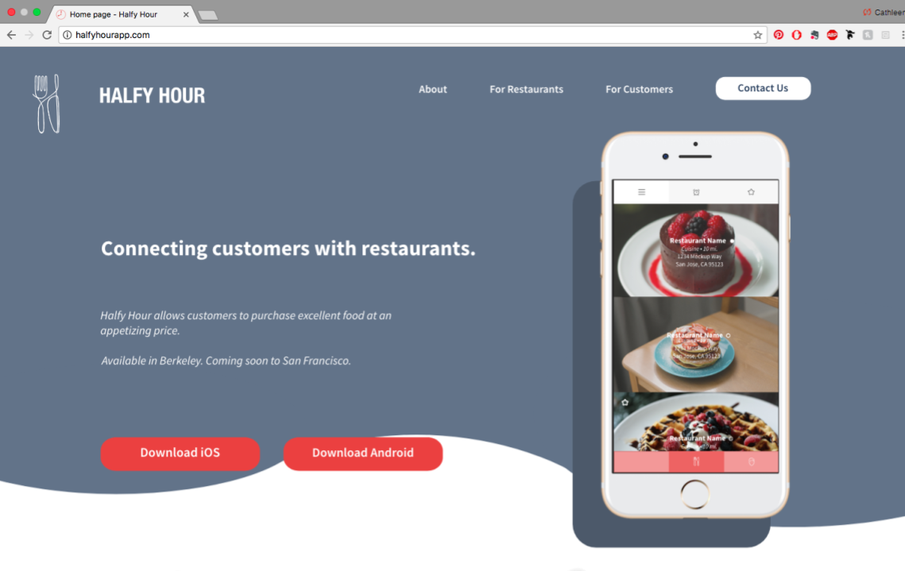
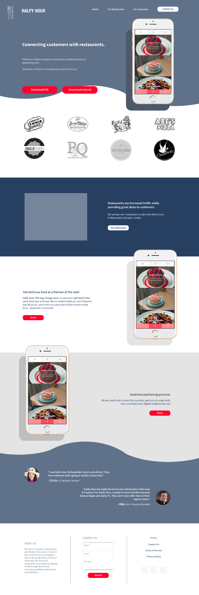

02 — Web UI/UX | Halfy Hour Website
Introduction
Halfy Hour is a Berkeley based startup, working on a smartphone application that offers locally sourced food at discounted rates.
- Local restaurants offer deals at their own choosing, dependent on how many servings they have available or want to make available
- Users order food through the app, and go to the restaurant to pick up food
Mission
Halfy Hour partners with restaurants to advertise their brand to thousands of people nearby. Restaurants see increased traffic while providing great deals to customers.
Objectives
Redesign the website so that it highlights key points. Target audience is potential partners, venture capitalist firms, and users.
Points of Improvement
Old Design
The original page was very barebones lacking:
- A lack of structure — the content simply stacked from the top down, providing no obvious entry points for the user.
- Little consistency with regards to font usage, which increased visual clutter and user confusion.
- The static presentation of information, with no room to expand should more information be required.
Quick Sketch Wireframing
I began with a quick sketch of a revamped design.
Final Solution
This is what my final solution looked like on the web.

Web view
Here it is altogether as one screen.

Full page
Reflection
Although my design hasn’t had the chance to be implemented since Halfy Hour got acquired, I have assisted in the transition by passing on mockups and assets. This was a short project that I did for fun. Due to the speedy nature of the project, my process was truncated. Nonetheless, I learned a lot from this sprint, including how to divide a page so that when scrolling down the page flows seamlessly.